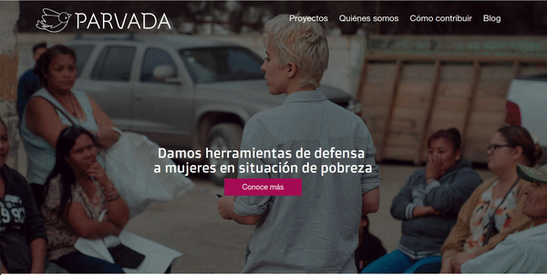

Ali González
Developer, Ruby on Rails
UX and Front-end (HTML / CSS)
Secondary: PHP and Javascript
ponentesincausa @ gmail.com
Data-viz
Interactive Data-viz d3.js
Front-end
Front-end development
In progress
Education
BA in Philosophy, University of London
Comptia A+ Certified IT Technician
Intermediate D3.js Data Visualization, Knight Center for journalism
Lean UX Course, Wizeline UX Academy
Other programming courses include Ruby, Rails, SQL, Javascript and others.
Teaching
Comienza a programar @ Función Lab, 2017
Lean UX @ ITESO (4 weeks programme), 2017
Introduction to Civic Tech @ Mi Bootcamp UDG, 2016
Civic Innovation for problem resolution @ Epicentro, 2016
More about me
I love cats. I love every kind of cat. I'm a technologist with 13 years of experience in IT teams, with team leadership expertise; The last 3 years I have focused in civic tech design and development, as well as software development and civic tech teaching. My motto is that, in order to solve problems, technology must follow the process and not viceversa. I'm very passionate about software, hence I spend my free time learning new frameworks and libraries.